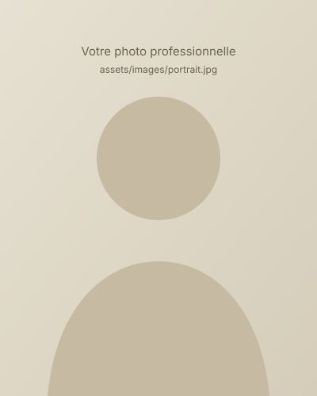

Agriculture durable & agroécologie
Systèmes de production résilients et respectueux des ressources.
Mon fil conducteur : faire circuler le savoir — du champ à la salle de formation, d’une langue à l’autre, d’une voix à une communauté.
Ingénieur agronome de formation, je m’intéresse à l’agriculture durable, à l’environnement et à tout ce qui permet aux connaissances de devenir des compétences utiles.
Mon parcours s’est construit à l’intersection de plusieurs mondes : l’agronomie, la formation, la traduction, la communication et la création de contenus numériques. Ce qui les relie, c’est une conviction : le savoir n’a de valeur que lorsqu’il est partagé.
Formé en agronomie, je porte un intérêt particulier à l’agroécologie, à la gestion des sols et de l’eau, à la biodiversité et aux changements climatiques, ainsi qu’aux outils numériques qui transforment l’agriculture : télédétection, SIG et agriculture de précision.
La formation est devenue le prolongement naturel de ce travail. Formateur, accompagnateur et concepteur pédagogique, j’aime rendre accessibles des sujets techniques et construire des parcours d’apprentissage clairs. C’est dans cet esprit que j’ai fondé POLE GEO-HAGRI, une plateforme gratuite de formation en agriculture durable.
La traduction m’a appris la précision, la rigueur et le respect de la confidentialité. Elle me permet aujourd’hui d’accompagner des particuliers et des organisations dans la communication de documents académiques, administratifs et professionnels.
Depuis 2022, mon engagement au sein de Toastmasters International a façonné ma pratique de la communication et du leadership : VP Education, puis Président de club, puis Area Director. Ces responsabilités m’ont appris à écouter, à mobiliser des équipes et à faire grandir les autres.
Enfin, la création de contenu — articles, vidéos, infographies, formations en ligne — me permet de toucher un public plus large et de transformer le savoir en ressources accessibles.
Biographie proposée — à relire, corriger et compléter (diplômes, institutions, dates).

Contribuer à une agriculture durable et à des communautés plus compétentes en rendant le savoir accessible, compréhensible et utile — dans la langue et le format qui conviennent à chacun.
Apprendre sans cesse, transmettre avec générosité, agir avec rigueur. Chaque formation, traduction ou prise de parole est une occasion de créer de la valeur durable.
Systèmes de production résilients et respectueux des ressources.
Biodiversité, changements climatiques, empreinte carbone.
Télédétection, SIG / QGIS, agriculture de précision.
Pédagogie active, e-learning, formation des adultes.
Traduction, localisation et communication multilingue.
Prise de parole, mentorat, leadership au service des autres.
Niveaux exprimés de manière qualitative : Débutant, Intermédiaire, Avancé, Expert.
Organisations, universités, entreprises, ONG et partenaires : parlons de vos besoins et de la façon dont je peux y contribuer.